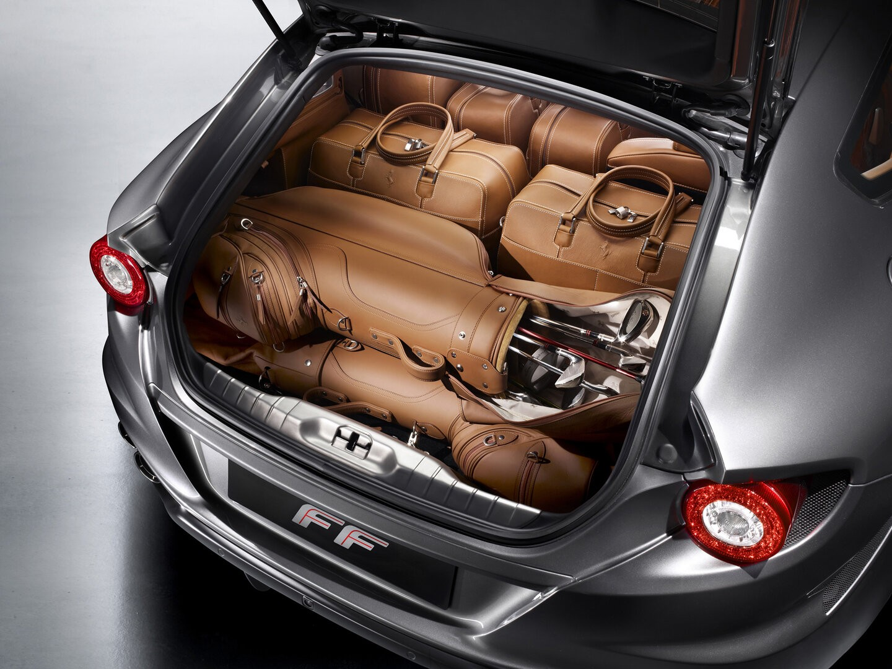
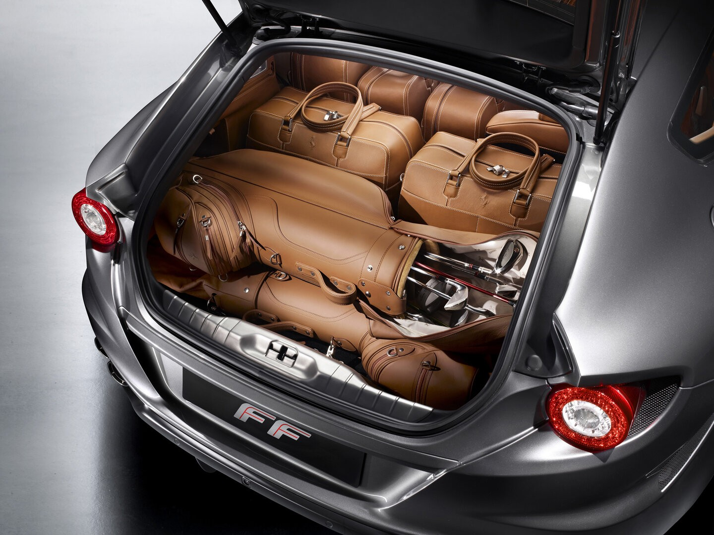

Motor: V12 atmosférico de 6.3 litros.
Potencia: 660 CV.
Par máximo: 683 Nm.
Transmisión: Automática de doble embrague (DCT) de 7 velocidades.
Tracción: Integral inteligente (sistema 4RM de Ferrari).
0–100 km/h: 3,7 segundos aprox.
Velocidad máxima: 335 km/h.
El sistema 4RM es muy ligero comparado con otros AWD, manteniendo el carácter deportivo propio de Ferrari.
Carrocería tipo shooting brake, con silueta alargada y portón trasero grande.
Diseño creado por Pininfarina.
Combina elegancia con un toque agresivo, pero con un perfil más funcional que un superdeportivo tradicional.
Cuatro plazas reales, algo raro en Ferrari.
Espacio suficiente para adultos en la parte trasera.
Maletero amplio para un Ferrari: alrededor de 450 litros y ampliable abatiendo los asientos.
Acabados de lujo: cuero, fibra de carbono, aluminio y múltiples opciones de personalización.
Sistema de tracción 4RM desarrollado por Ferrari:
Más ligero que un AWD tradicional.
Solo conecta el eje delantero cuando es necesario para mejorar la tracción.
Suspensión Magnetorheológica (SCM).
Control de estabilidad y modos de conducción ajustables.
Sistema multimedia avanzado para la época y opción de pantalla para el pasajero.